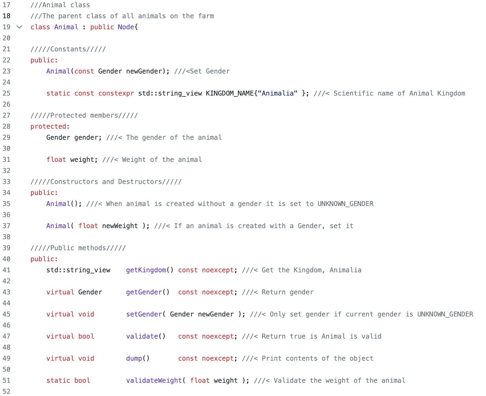
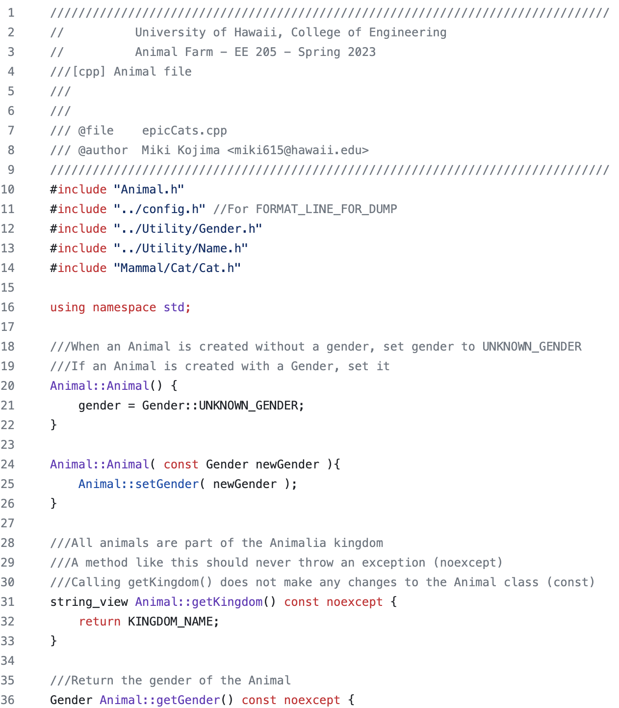

Animal Farm is a large project completed in EE 205. Each lab within the project was designed to learn and practice the basics of C and C++ and adopt good software engineering skills using tools such as Git, CLion, and the command line. Upon the completion of each lab, students were expected to push new or updated files to GitHub.
As this project was done individually, there was no specific role for me. Therefore, I was responsible for all of the work, which involved reading documentation consisting of specific tasks and requirements for each lab. Upon completing every lab, I had to make sure my code passed all of the unit tests before pushing my commits to GitHub.
Throughout the Animal Farm project, I learned object-oriented programming by representing animals as objects and implementing the organization of the database in C++. I was introduced to CLion, an IDE that is extremely powerful in programming and organizing various files such as README, CMake, and Doygen documentation. I also learned how to write good unit tests to ensure the implementations in my code work properly for every test case.
The following is an overview of the timeline of the Animal Farm project:
| Animal Farm Lab | Description |
|---|---|
| Animal Farm 0 | Start the Animal Farm lab from scratch using CLion. Write a trim function and get used to Boost Tests. |
| Animal Farm 1 - Epic Cats | Add a Weekly Progress file. Create a new executable, epicCats. Create an array-based database of cats. |
| Animal Farm 2 - Cat Dominion | Create an enum class for gender and a new directory, Animal. |
| Animal Farm 3 - Cat Infinitum | Create a new directory, Container. This directory contains files for Node, Container, and SingleLinkedList, which are used to store animals. |
| Animal Farm 4 - Cat Wrangler | Create a new executable, catWrangler, and a new directory, Mammal. Write a compare() method for sorting the SingleLinkedList. |
| Animal Farm 5 - Cat Empire | Create a new executable, catEmpire. Add a utility, Name. Add a speak() function and clean Animal Farm. |
| Animal Farm 6 - Cat Wall | Wrapping up Animal Farm. Create a README.md and publish everything. |
Each lab took approximately 1~2 weeks to complete and varied in difficulty. However, each lab was very meaningful as it taught valuable skills and knowledge of the C and C++ language while providing opportunities to exercise and gain experience in object-oriented programming.
Examples of some of the implementations in the Animal class file:
 
Link to repository: EE-205/ee205_animal_farm-miki-x2